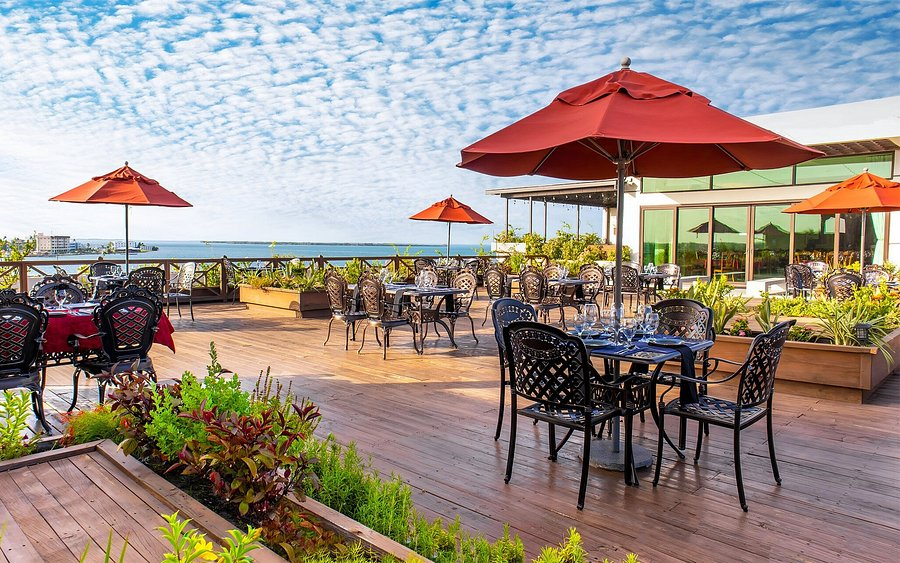
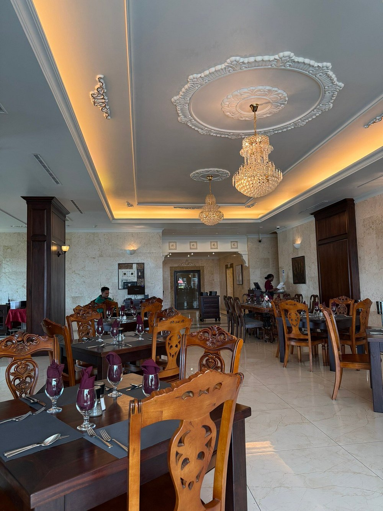
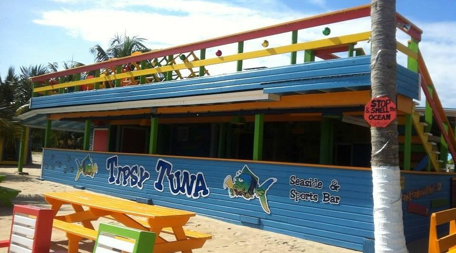
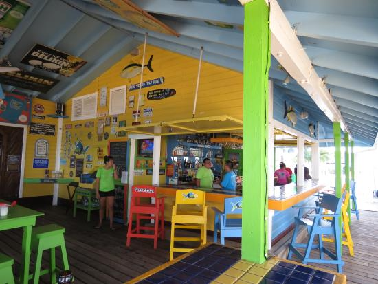
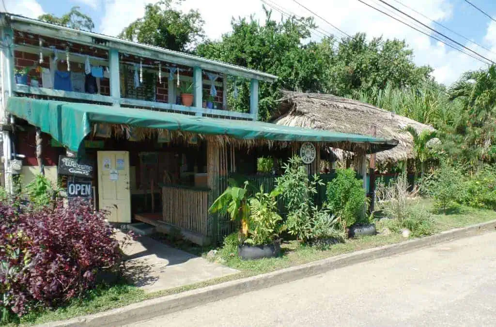
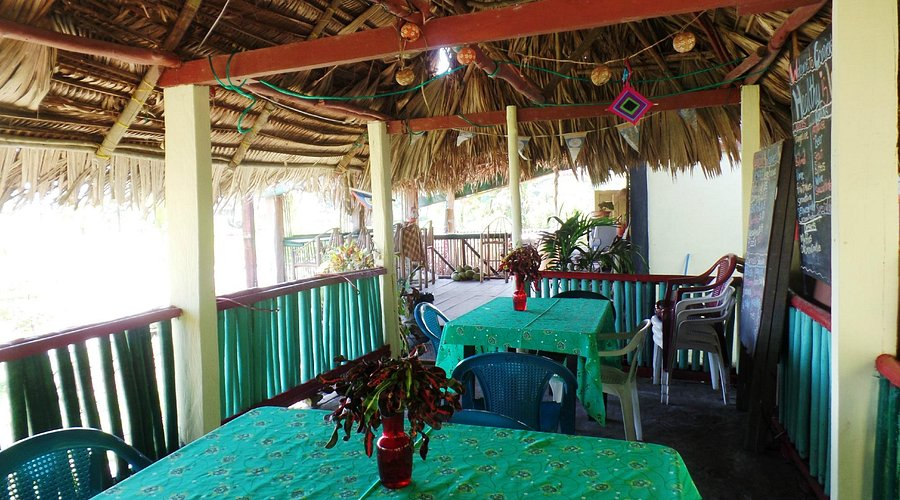

WELCOME LOCAL TOURISTS
Experience the rhythmic soul of the South and the historic charm of our Eastern coast. We invite you to explore these districts where every meal is a celebration of our diverse heritage.
Belize District
The gateway to the Jewel, where history and the Caribbean Sea meet.
Vino Tinto Restaurant Bar and Grill
A sophisticated dining experience combining grill favorites with a vibrant atmosphere.
- Grilled Steak Medallions
- Signature Pasta Dishes
- Craft Cocktails


Stann Creek District
Home to the country's most beautiful beaches and rich Garifuna traditions.
Tipsy Tuna
A waterfront gem in Placencia perfect for local tourists seeking fresh seafood.
- Fish Tacos
- Conch Fritters
- Seaweed Shake


Toledo District
Belize's final frontier, offering pristine rainforests and chocolate adventures.
Gomier's Restaurant Vegan and Seafood
Renowned for healthy, flavorful dishes that celebrate both the sea and the garden.
- Vegan Tofu Curry
- Steamed Fish in Coconut Milk
- Homemade Sourdough Bread

